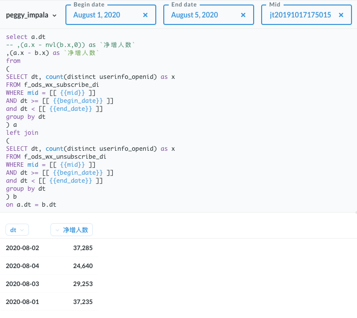
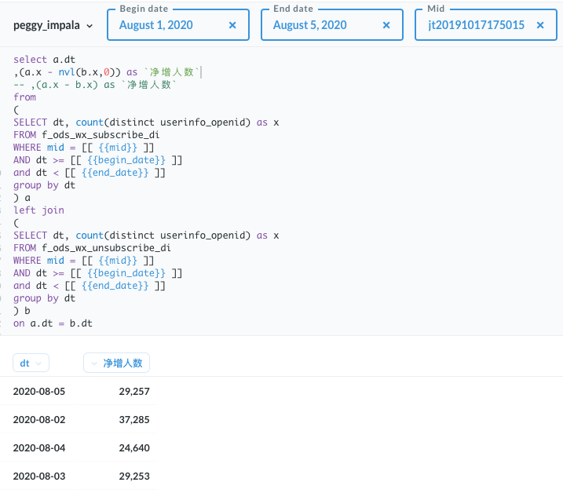
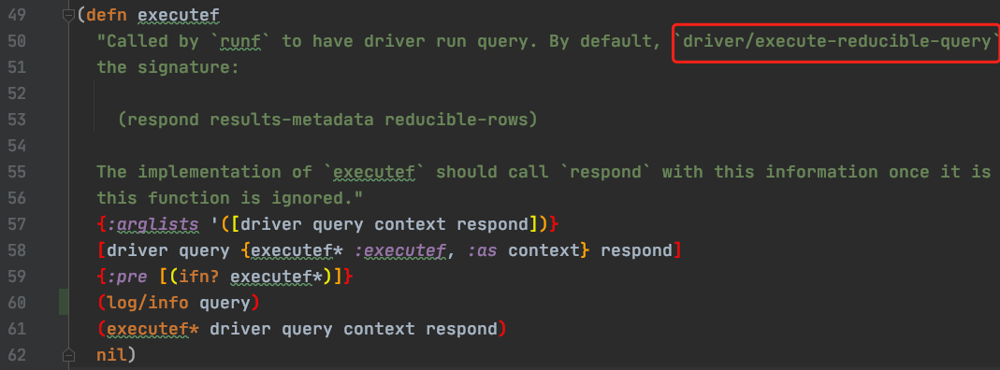
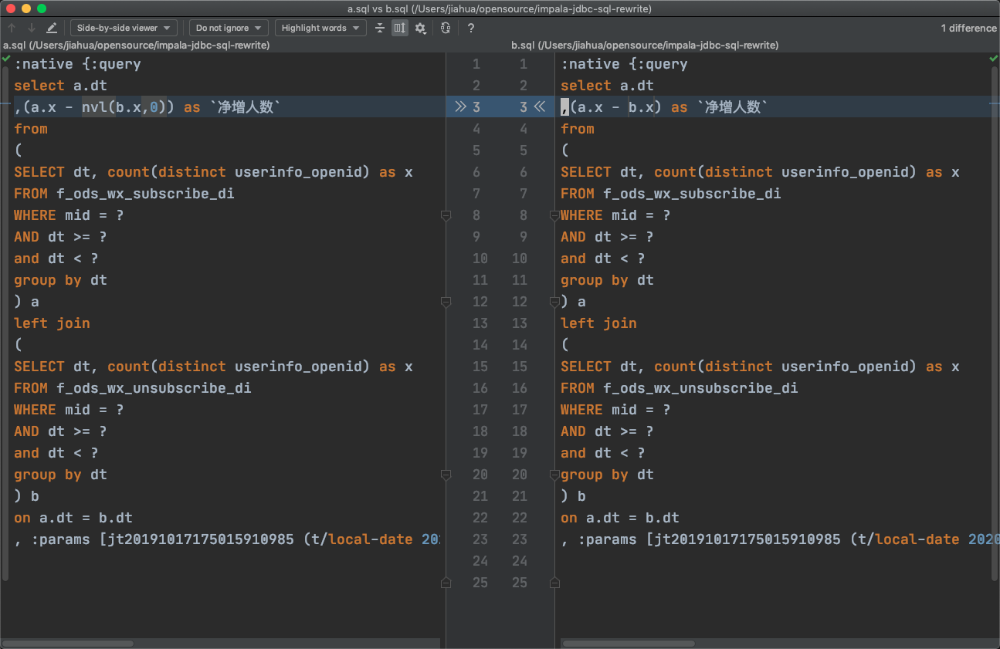
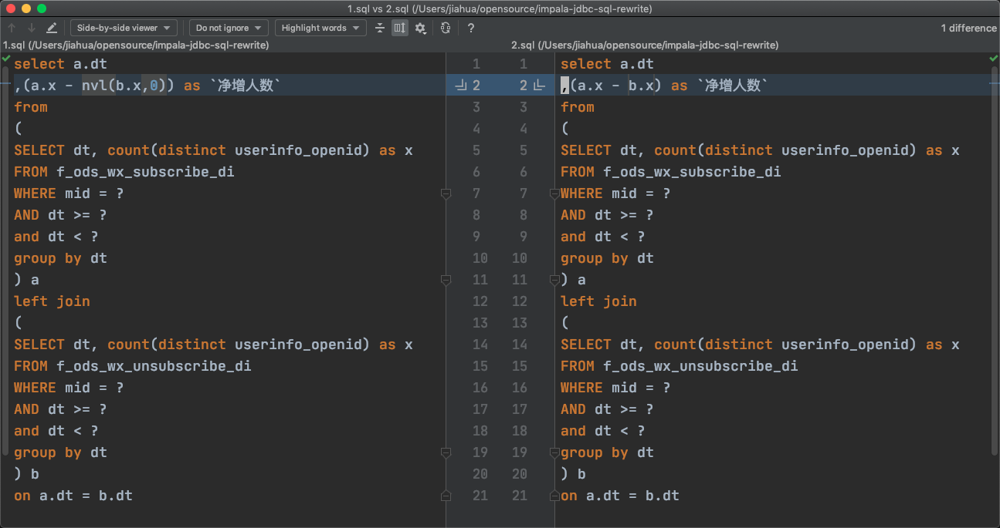
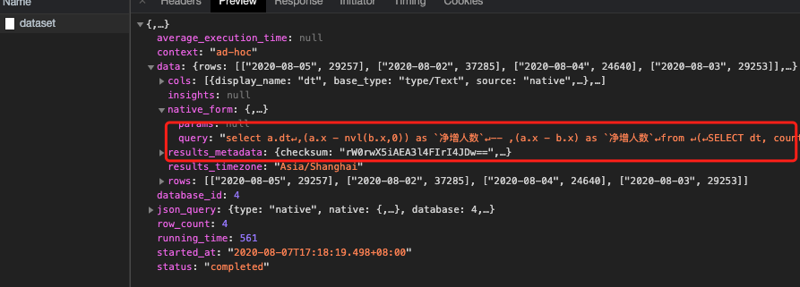
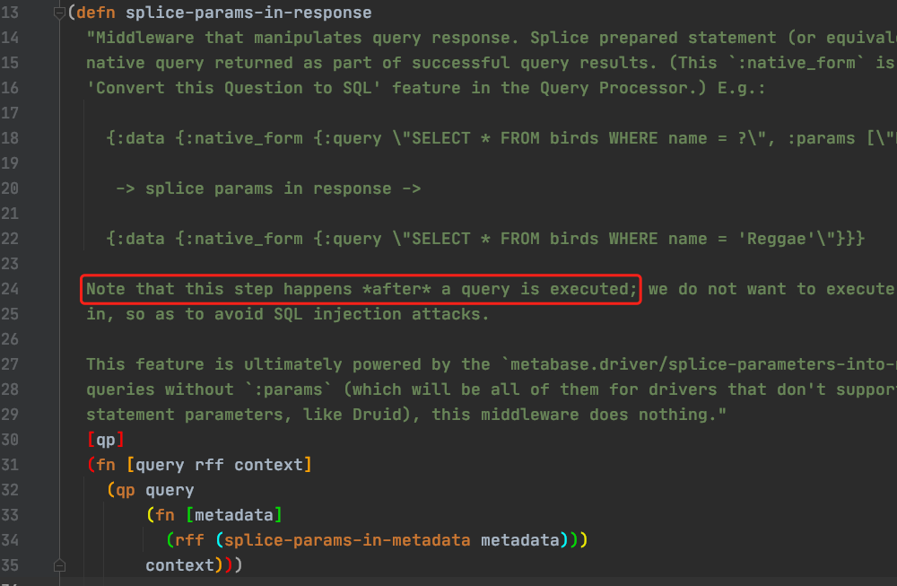

现象
洪敏在用 Metabase 写报表过程中，使用 Metabase 的日期变量，发现的诡异问题。两条语句仅有部分差异，返回的结果却差了一天。

期望结果。

与期望结果差了一天。
在 CDH 中查看 impala 服务器接收到的请求。
得到期望结果的SQL：
dt 是字符串，内容是日期，参数是TIMESTAMP，SQL引擎会自动转为两个 TIMESTAMP比较。
SELECT `a`.`dt`, (`a`.`x` - `b`.`x`) as `净增人数` FROM (SELECT `f_ods_wx_subscribe_di`.`dt`, COUNT(DISTINCT `f_ods_wx_subscribe_di`.`userinfo_openid`) as `x` FROM `product`.`f_ods_wx_subscribe_di` WHERE ((`f_ods_wx_subscribe_di`.`dt` < CAST( '2020-08-05 00:00:00.0' AS TIMESTAMP)) AND ((`f_ods_wx_subscribe_di`.`mid` = 'jt20191017175015910985') AND (`f_ods_wx_subscribe_di`.`dt` >= CAST( '2020-08-01 00:00:00.0' AS TIMESTAMP)))) GROUP BY `f_ods_wx_subscribe_di`.`dt`) AS a LEFT JOIN (SELECT `f_ods_wx_unsubscribe_di`.`dt`, COUNT(DISTINCT `f_ods_wx_unsubscribe_di`.`userinfo_openid`) as `x` FROM `product`.`f_ods_wx_unsubscribe_di` WHERE ((`f_ods_wx_unsubscribe_di`.`dt` < CAST( '2020-08-05 00:00:00.0' AS TIMESTAMP)) AND ((`f_ods_wx_unsubscribe_di`.`mid` = 'jt20191017175015910985') AND (`f_ods_wx_unsubscribe_di`.`dt` >= CAST( '2020-08-01 00:00:00.0' AS TIMESTAMP)))) GROUP BY `f_ods_wx_unsubscribe_di`.`dt`) AS b ON (`a`.`dt` = `b`.`dt`)
得到错误结果的SQL：
dt 本身是字符串，参数也是字符串。变成两个字符串比较，结果确实差一天。只是在select里使用了一个函数，就造成SQL巨大差异，很神奇。
select a.dt ,(a.x - nvl(b.x,0)) as `净增人数` from ( SELECT dt, count(distinct userinfo_openid) as x FROM f_ods_wx_subscribe_di WHERE mid = 'jt20191017175015910985' AND dt >= '2020-08-01 00:00:00.0' and dt < '2020-08-05 00:00:00.0' group by dt ) a left join ( SELECT dt, count(distinct userinfo_openid) as x FROM f_ods_wx_unsubscribe_di WHERE mid = 'jt20191017175015910985' AND dt >= '2020-08-01 00:00:00.0' and dt < '2020-08-05 00:00:00.0' group by dt ) b on a.dt = b.dt
metabase，metabase impala driver，impala JDBC driver都会有问题。
Metabase 打印日志 query, param
native_form/query 构造完成后，会执行 executef，底层是driver/execute-reducible-query，就是JDBC prepareStatement构造与执行。
在executef方法记录日志。

query的区别如之前、params是完全一致的。所以，不是Metabase的问题。

而 metabase impala driver 也没有重载 driver/execute-reducible-query 方法。也基本排除了嫌疑。
复现问题
目标锁定在 impala JDBC driver。写一个Java程序复现。
- 使用相同的 Impala JDBC 驱动。
- 同样是参数化提交 SQL。
- 准备类似的SQL Statement。

核心逻辑。代码在此。
connection = DriverManager.getConnection(CONNECTION_URL);
ps = connection.prepareStatement(sql);
ps.setString(1, "jt20191017175015910985");
ps.setTimestamp(2, new Timestamp(2020 - 1900, 8 - 1, 1, 0, 0, 0, 0));
ps.setTimestamp(3, new Timestamp(2020 - 1900, 8 - 1, 5, 0, 0, 0, 0));
ps.setString(4, "jt20191017175015910985");
ps.setTimestamp(5, new Timestamp(2020 - 1900, 8 - 1, 1, 0, 0, 0, 0));
ps.setTimestamp(6, new Timestamp(2020 - 1900, 8 - 1, 5, 0, 0, 0, 0));
resultSet = ps.executeQuery();
ResultSetMetaData rsmd = resultSet.getMetaData();
int columnsNumber = rsmd.getColumnCount();
while (resultSet.next()) {
for (int i = 1; i <= columnsNumber; i++) {
if (i > 1) System.out.print(", ");
String columnValue = resultSet.getString(i);
System.out.print(columnValue + " " + rsmd.getColumnName(i));
}
System.out.println("");
}
服务器上执行，结果复现。
$ java -jar impala-jdbc-sql-rewrite-1.0-SNAPSHOT.jar 1.sql
2020-08-05 dt, 29257 净增人数
2020-08-02 dt, 37285 净增人数
2020-08-04 dt, 24640 净增人数
2020-08-03 dt, 29253 净增人数
$ java -jar impala-jdbc-sql-rewrite-1.0-SNAPSHOT.jar 2.sql
2020-08-02 dt, 37285 净增人数
2020-08-04 dt, 24640 净增人数
2020-08-03 dt, 29253 净增人数
2020-08-01 dt, 37235 净增人数
排查过程中的误区
一直以为Metabase服务返回的native_form/query是实际提交给JDBC驱动的sql。

其实并不然。native_form/query是拼接好的SQL，参数已经填充进了SQL语句中。而实际执行SQL，使用的是参数化提交。源码表示返回的native_form/query是query实际执行后的产物。所以对排查问题有误导作用。

临时解决方案
驱动的问题暂时无法解决，Workaround是有的。只要保证日期比较的时候，条件表达式左右之一至少是TIMESTAMP类型。
Last modified on 2020-08-07